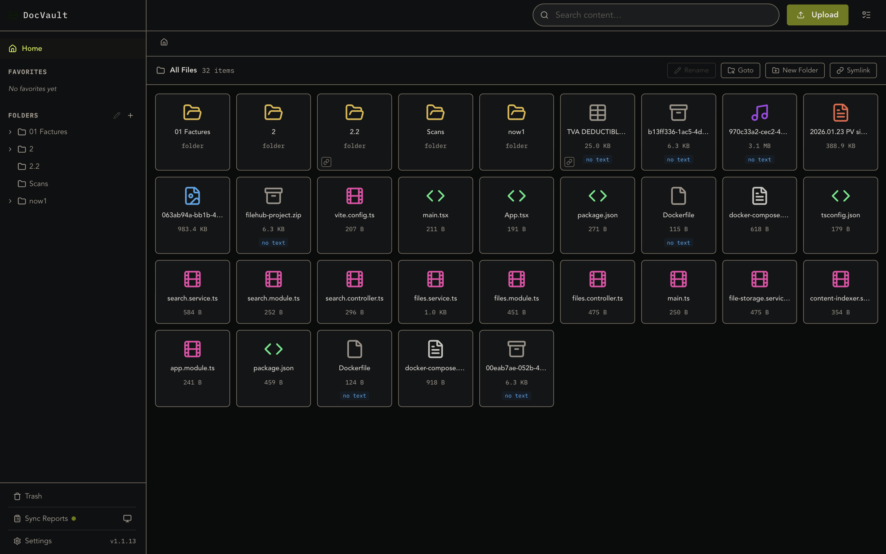
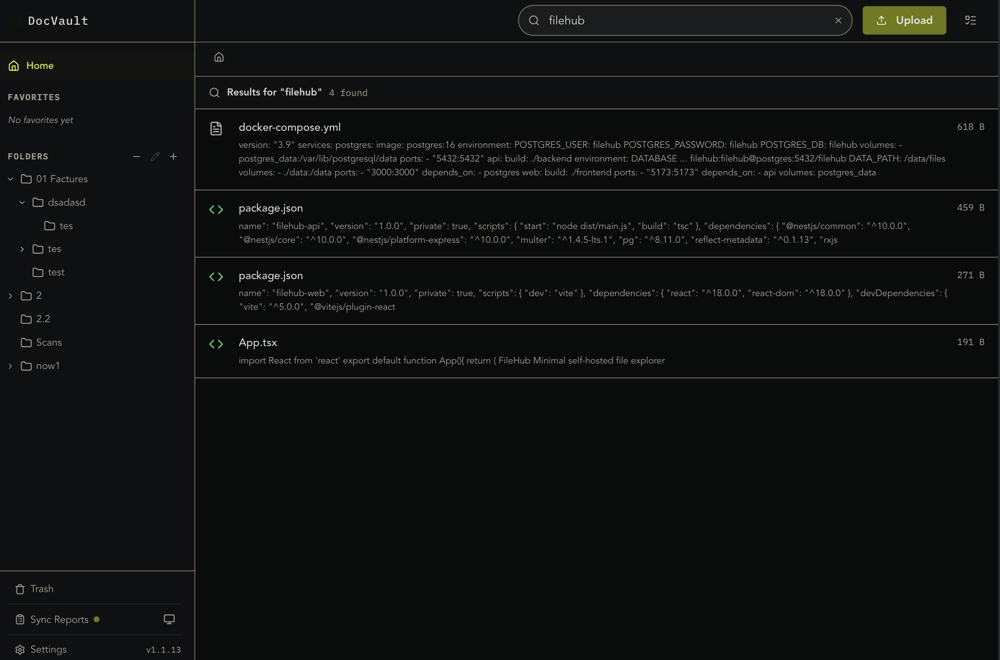
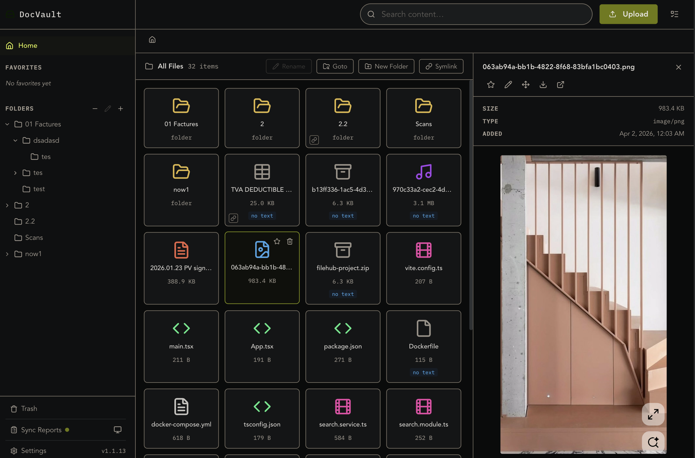
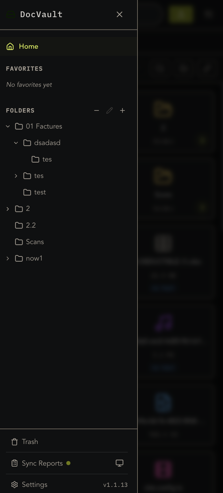
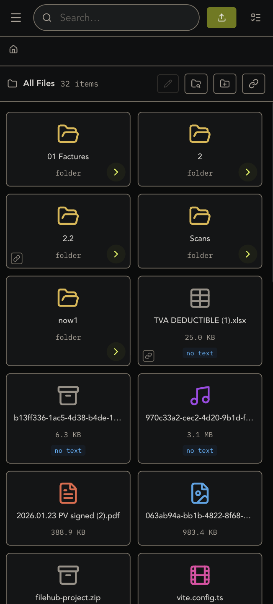

A modern, self-hosted file manager built on top of your actual filesystem — not a database. Full-text search in under 50ms. Deploy with a single command. No cloud. No subscriptions. No compromises.

No bloat, no gimmicks. Just a clean, fast file manager that stays out of your way.
Organize files your way with unlimited folder nesting, drag-and-drop, and instant navigation. Create symlinks for cross-referencing without duplication.
PostgreSQL BM25-powered search across all your documents. PDFs, text files, code — indexed and searchable in milliseconds.
Preview images, PDFs, videos, audio, code, and markdown directly in the browser. No downloads needed.
Install on any device — desktop, tablet, or phone. Works offline with service worker caching. Feels native, runs everywhere.
Power-user shortcuts for everything. Search with /, upload with u, navigate with speed. Your hands never leave the keyboard.
Your files never leave your infrastructure. No third-party APIs, no telemetry, no vendor lock-in. Docker Compose up and you're live. Compatible with Paperless-ngx scanning workflows.
Pin your most-used files and folders. One click to star, instant access from the sidebar.
Soft-delete with confidence. Every deleted file goes to trash first. Restore with one click when you change your mind.
SimplyFiles is a frontend built directly on top of your OS filesystem. Your files are real files on disk — not blobs trapped in a database. Mount a Docker volume and your data persists exactly where you expect it. Works on any OS, but best on Linux where symlink support unlocks the full feature set.
ls if you want
Full-text content search powered by PostgreSQL. Every document is chunked, indexed, and searchable the moment it's uploaded.

websearch_to_tsquery
Images, PDFs, videos, audio, code, markdown — all rendered inline. Dark and light themes included.

Fully responsive with touch-optimized bottom sheets, swipe gestures, and installable as a PWA on any device.


Docker Compose handles everything — database, API, frontend, reverse proxy. You're live in under a minute.
SimplyFiles is free, open-source, and yours forever. Deploy it today.